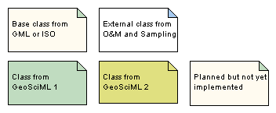

Package GeoSciML
Root package for GeoSciML v 2.0_rc3
GeoSciML is an application schema that specifies a set of feature-types and supporting structures for information used in the solid-earth geosciences.
GeoSciML v2 is scoped approximately to the information required to construct geologic maps. "Map" is interpreted broadly, and not constrained to conventional 2-D semi-horizontal cartography, so the GeoSciML information structures also support representation of the distribution of geologic features on sections, along curvilinear-traverses and boreholes, within volumetric samples, etc.
GeoSciML v2 is primarily concerned with "interpreted" geology (units, structures, etc), but links to external schemas for the descriptions of observational data.
GeoSciML is factored into a set of sub-packages.
Tagged Values |
||
| Tag | Value | Notes |
| classMap | https://www.seegrid.csiro.au/subversion/GeoSciML/trunk/model/ClassMap_GeoSciML.xml | Description: Full URL to document providing a mapping of classes in this schema to their representation as XML Schema element declarations and type definitions |
| gmlProfileSchema | #NOTES#Description: an element gml:gmlProfileSchema with the content | Description: an element gml:gmlProfileSchema with the content |
| owner | IUGS Commission for Geoscience Information | Description: Party responsible for maintenance of this package |
| schemaLocation | http://www.geosciml.org/schemas/GeoSciML/2.0/geosciml.xsd | Description: Full URL to XML Schema document representing this schema |
| targetNamespace | urn:cgi:xmlns:CGI:GeoSciML:2.0 | Description: URI to unique target namespace |
| version | 2.0.0 | Description: Schema version |
| xmlns | gsml | Description: Prefix associated with namespace |
| xsdDocument | geosciml.xsd | Description: Relative path to XML Schema document representing this schema |
UML Diagram: color-codes
